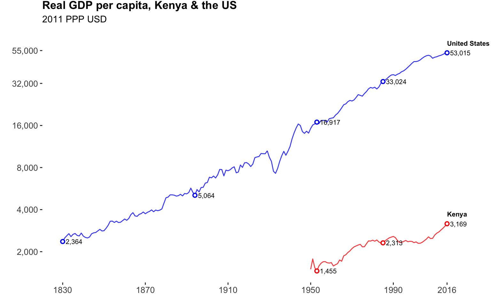
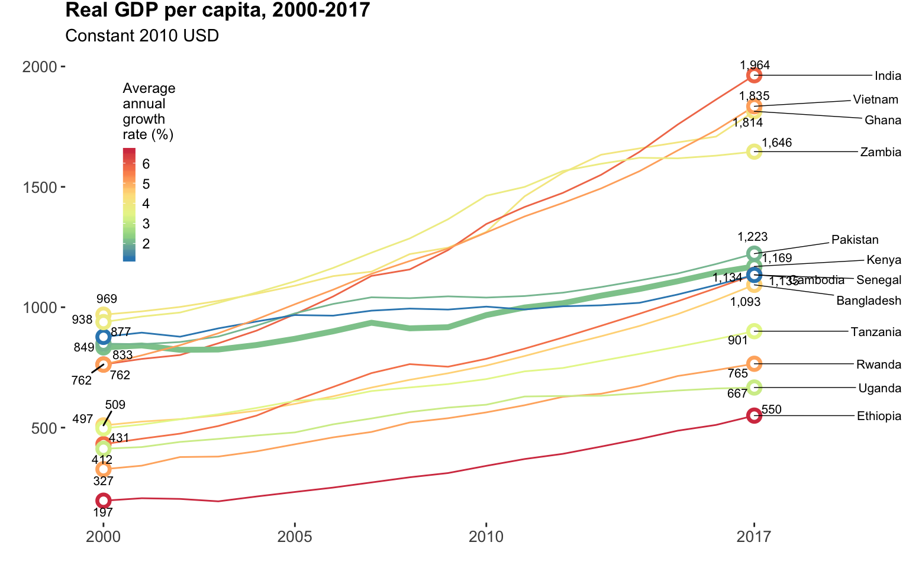
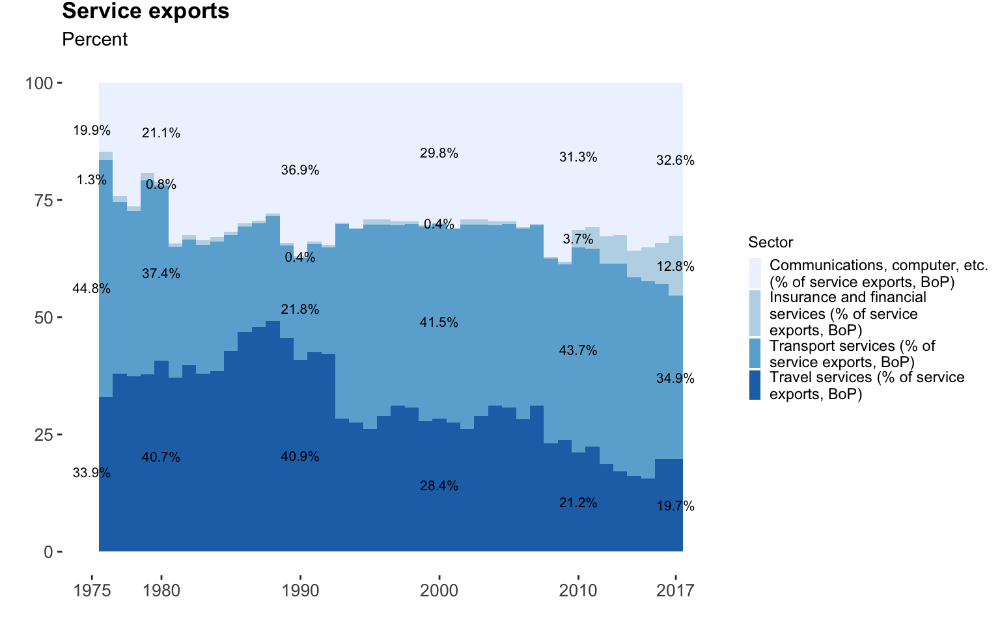

Evidence from macro and micro data
Introduction
References:
The long-run poverty and gender impacts of mobile money Suri & Jack (2016).
2019 FinAccess Household Survey CBK, KNBS & FSD Kenya (2019).
Starting with microcredit in the late 1980s, there has been a growing movement of multilateral institutions, large private foundations, non-profit organizations, corporations and governments that aims to provide the low-income mass market that characterizes much of the global population with formal financial services, often by disrupting established ways of doing business. This movement is largely motivated by the conviction that access to financial services will promote income growth and reduce poverty. The most recent example of this is Libra - Facebook’s new digital currency - which is being launched in the name of connecting people who do not have access to traditional banking platforms, citing in its promotional video that access to digital financial services can reduce poverty by 22 percent.
Over time, the focus has shifted from credit towards encouraging access to a wider, more comprehensive range of financial services, including savings, payments and insurance. There is also a growing emphasis on using modern information and communication technologies as tools to help lower the cost of reaching and servicing often isolated populations whose income streams support only relatively small transactions.
Kenya has become a poster-child of this movement. M-PESA is widely hailed as a major success story both because of its explosive adoption among unbanked population segments and the evidence it has delivered tangible economic benefits to Kenya’s poor (Suri & Jack, 2016). Between 2006 and 2018, the share of Kenya’s population using either an account from a formal financial institution or a mobile money wallet grew from 27 to 83 percent at an astonishing average rate of over 9.4 percent per year (FinAccess 2019). This broadening of the consumer-base for financial services has paralled the economic growth of the financial and ICT sectors, which over the same period grew by 7.4 and 10.9 percent per year respectively.
But have there been positive spillovers to the wider economy from a larger financial sector and greater inclusion? There are some positive signs: Driven by consumption growth among the poorest 40 percent of the population, Kenya’s national poverty rate declined by about 1 percent per year (from 47 to 36 percent) between 2005 and 2015, and a vibrant technology and financial sector is attracting talent, resources and wider investment to Nairobi, as well as deepening the country’s capabilities in software development and computing technologies which could theoretically position it to take advantage of adjacent fields like artificial intelligence and robotics in the future. These are certainly bright spots but at the same time the economic circumstances of millions of Kenyans has not fundamentally changed. Modern production technologies in agriculture have not diffused widely and food prices more than doubled between 2005 and 2015, squeezing the incomes of both urban and rural families alike, perhaps helping fuel the massive demand for low-value, short-term digital loans. Lending to the private sector, a measure that links to the financial system’s ability to “research firms, exert corporate control, provide risk management services, mobilize savings and facilitate transactions” (Levine, 2005) increased only modestly from 26 to 33 percent between 2005 and 2016. Despite involving over 60 percent of Kenya’s workers, agriculture received less than 4 percent of commercial bank lending in 2017. Further, little dynamism among manufacturing and service sector firms contributes to low rates of formal job creation relative to Kenya’s burgeoning labor force: an estimated 85 percent of Kenyan workers are informally employed in jobs or running businesses that offer few protections, limited financial stability and little career growth potential.
Has a focus on access, accounts and the direct, short-term impact of financial services on households crowded out attention on financial sector development more broadly and its potential to boost productivity, long-run growth and the welfare of future generations? As Kenya’s increasingly large, diverse and profitable financial system has included within its reach ever larger segments of the population, has it also supported the ability of individuals to invest in production and human capital? Has it been able to identify promising firms and allocate capital to support their ability to acquire and scale production technologies and capabilities so that they can compete in the market, grow and employ more people? In addition to creating mobile financial services that are suited to an economic context that offers only very narrow pathways to upward mobility, is it doing enough to change that context?
These big-picture questions are particularly important as Kenya’s Vision 2030 plan “aims to transform Kenya into a newly industrializing, middle-income country” by 2030. To achieve this vision Kenya will need to raise its GNI per capita from around USD 1,460 today to USD 3,895 in 2030, requiring an average growth rate of 7.8 percent per year, more than triple what it was between 2000 and 2017. In the short-run, the country’s policy efforts are focused on achieving the pillars of its “Big-four” economic agenda: universal healthcare, food security, manufacturing and affordable housing. To give an example of the level of ambition embedded in the plan’s targets, Kenya aims to increase the share of manufacturing in the economy from 9 percent of GDP in 2017 to 20 percent in 2022.
There seem to be blindspots in the current program of advocacy, research and investment ocurring under the financial inclusion umbrella that prevent more concrete guidance to the needs of policymakers that are grappling with achieving and implementing ambitious development programs like Kenya’s. Specifically, what policies and investments in the development of Kenya’s financial system are likely to have substantial effects on the prospects of raising productivity and long-run economic growth without compromosing stability? Certainly efforts to widen access to basic accounts, payment systems and easing credit constraints to low-income households has a role, but are these efforts going to help catalyze the transformation in economic conditions for those households that Kenya is striving for under its plan?
This note proceeds as follows. It first describes different facets of Kenya’s economic growth, complexity and technology landscape using publicly available data with a focus on their evolution in the past 20-30 years and contrasts Kenya’s experience with of a group of comparison countries. Secondly, it looks at changes in the financial sector and examines the links between the financial sector, real sector growth and technological change.
Kenya’s growth story
Theories of growth
Figure 1 The long view: The average incomes of Kenyans compared to Americans
References:
Maddison project database Bolt et al (2018).
The rise and fall of American growth Gordon (2016).
Its not factor accumulation: Stylized facts and growth models Easterly and Levine (2001)
Knowledge or its adoption? Pritchett (2017).
The empirics of growth: An update Bosworth and Collins (2003).
Technology in the great divergence Clark and Feenstra (2001).
If technology has arrived everywhwere, why has income diverged? Comin and Mestieri (2013).
The life cycle of plants in India and Mexico Hsieh and Klenow (2014).
What are the challenges of economic growth Hausmann (2015)
Kenyans have an average living standard today that is about one twentieth of the one enjoyed by Americans (average income per person adjusted for differences in prices is USD 3,285 in Kenya vs. USD 59,531 in the United States) (Figure 1). You have to go all the way back to 1855 to find the year in which Americans had an estimated living standard equivalent to the one Kenyans have today (Bolt et al, 2018). As argued by Robert Gordon in his book “The rise and fall of American growth”, America’s growth story begins 15 years later, in 1870. Gordon designates the next 100 years a “special century” for the United States (US), one that brought about an economic revolution that:
freed households from an unremitting daily grind of painful manual labor, household drudgery, darkness, isolation, and early death. Only one hundred years later, daily life had changed beyond recognition. Manual outdoor jobs were replaced by work in air-conditioned environments, housework was increasingly performed by electric appliances, darkness was replaced by light, and isolation was replaced not just by travel, but also by color television images bringing the world into the living room. Most important, a newborn infant could expect to live not to age forty-five, but to age seventy-two.
Driving these transformational changes in welfare were the ideas and inventions that put the US at the cutting-edge of technology and growth. Between 1870 and 1970, the invention and adoption of electricity, the internal combustion engine, public waterworks, modern communication, anesthetics, antibiotics and other chemicals and pharmaceuticals, transformed how things got made and how people’s daily lives unfolded.
In the 65 years since its independence in 1963, Kenya’s purchasing power per person grew at an average rate of 0.67 percent per year, less than half the rate at which livings standards grew in the US during its special century. And unlike the US’s mostly consistent growth, Kenya’s growth trajectory has been unstable and at times stagnant. For most of the 1980s and 90s, average living standards did not progress. Despite acceleration in the growth of average income since 2000, many people’s daily lives in Kenya are shaped by hardship in ways that resemble life in the US in 1870. In 2016, 40 percent of adults reported farming or working as farm day-laborers as their primary income source, about half of households did not have electricity in their home, nearly three quarters used firewood or charcoal for cooking, only 1 in 4 households were connected to a piped water supply and less than 1 in 10 had a flush toilet connected to sewerage (FinAccess, 2016).
In one domain, however, a large majority of Kenyans use a frontier technology which has opened up new possibilities. Over three in four adults own a mobile phone, giving them the capability to communicate; and with the innovation of mobile money, to transfer funds instantly and affordably1. And for businesses, the capability to connect to the internet at high speeds 2 has supported the emergence of a growing digital economy 3. Perhaps no better illustration of this changing technological landscape is Safaricom. With a market capitalziation of USD 20.5 billion (the most valued company on the Nairobi Securities Exchange), Safaricom’s valuation derives directly from its ability to leverage cutting edge communications technologies and infrastructure. Technology spillovers have also benefitted Kenyans in ways that aren’t captured fully in GDP. For example, between 1960 and 2017, with the aid of basic health technologies like bed-nets and antibiotics, under-5 mortality fell from 197 to 46 deaths per 1,000 live births, driving an increase in life expectancy at birth from 46 to 67.3 years, placing it far above the Sub-Saharan Africa average of 56.9 years and close to the lower-middle income average of 67.9 years4.
But despite improvements in the mobility of financial capital, goods and technology, absolute living standards in Kenya relative to the US are diverging. Between 1963 and 2016 the ratio of GDP per capita (PPP) between the US and Kenya rose from 12 to 17. Kenya is not unique in this regard. Over the long run, living standards between rich and poor nations have diverged. Between 1820 and 1992, the ratio of average incomes between the richest and poorest fifth of countries rose from 6 to 70 (Easterly and Levine, 2001). The emprical observation that rich countries have historically grown faster than poor countries is at odds with the predictions of the earliest growth models which explained the dynamics of growth in terms of the high initial returns that would accrue to poorer countries investing in factors of production (such as machinery, factories and education to raise the skill-level of the workforce) and predicted convergence between countries. These models suggested that a country like Kenya would grow (and “catch-up” to rich countries) primarily by mobilizing resources from domestic and foreign savings towards investments in physical and human capital. Given a low capital stock (and abundant labor), additional capital investment would produce high returns, generating more output and the resources for additional investment until reaching a steady state where the country needed to use all of its investment resources to maintain or replace depreciated capital stock.
However, in synthesizing the evidence from several growth accounting studies, Easterly and Levine (2001) conclude that ‘when comparing growth experiences across many countries, “something else” – besides factor accumulation – plays a prominent role in explaining differences in economic performance’. That ‘something else’ is total factor productivity (TFP) or the part of output per person growth that is unexplained by growth in physical or human capital 5. Clark and Feenstra (2001) expand on this and argue that diverging incomes across countries since 1800 are a result of divergence in the TFP of economies resulting from technology - not an inability to get access to it - but differences in the efficiency in how new technologies are used. Bosworth and Collins (2003) show that between 1960 and 2000, TFP grew significantly more slowly in three developing country regions (Latin America, the Africa and the Middle East) than in industrial countries between 1960 and 2000. More recently, Comin and Mestieri (2017) explore whether the dynamics of technolgy can account for the long run divergence in incomes between countries and look specifically at the relative contribution of the rate at which new technologies arrive in a country and the rate at which technologies diffuse throughout the economy. The authors find that while technology adoption rates are converging (it takes less time today for new technologies to arrive in countries than they did 200 years ago), technology penetration rates have diverged and that these patterns of technology adoption and diffusion account for the majority of cross-country evolution of income growth. It is important to recognize, however, that factor accumulation is not irrelevant for growth everywhere and at all times. Available evidence suggests that factor accumulation, particularly physical capital, played a greater role than TFP in driving the more rapid rates of growth in South and East Asia relative to the industrial countries since 1960 (Pritchett 2017).
Other lines of inquiry build on the observation that new businesses in the US grow substantially over their life course (through investment in technology, developing new markets or producing higher quality products) relative to other countries. Hsieh and Klenow (2005) explore how differences between aggregate TFP relate to the life cycle of manufacturing plans in India and Mexico compared to the United States. Strikingly, while employment in US plants grows eight fold over the span of 40 years, Indian plants remain the same size and Mexican plants are only twice their initial size. These observations suggest the existence of factors - such as high taxes, labor costs, financial constraints or transportation and trade costs that constrain access to markets - which in some combination disincentivize organizational capital investment in India and Mexico. The authors explore a chain-reaction of mechanisms that can suppress overall TFP: If new entrants fail to invest, the plants will be less productive as they age. These incumbents in turn, will not effectively deter market entry, encouraging greater flow of entrants thereby reducing average establishment age and size. The authors find that low employment growth in Mexican and Indian plants is largely due to low productivity growth with age, and that aggregate TFP in the US would fall by around 25 percent if firms in the US moved to the Indian or Mexican life cycle. A more recent study suggests that differences in the life-cycle of firms between rich and poor are largely attributed to firms at the ends of the distribution in terms of growth and size.
Ricardo Hausmann’s work on complexity economics provides a related take on the dynamics of growth. Like others, Hausman attributes differences between rich and poor countries to technology but differentiates technology into tools (such as a mobile phone), codifiable knowledge (such as the computer program that runs the mobile phone’s operating system) and know-how (the tacit knowledge that cannot be easily written down). He argues that while tools and code are quick to move, know-how isn’t and conceptualizes the process of development and growth as the process of incrementally accumulating more know-how and expressing it through production of a more diverse and complex set of products:
In the economic growth process, countries in the developing world do not grow by making more of the same. In fact, more of the same is not the way rich countries grow either. In the process of economic growth, countries change what they do. They change what they’re good at. They evolve their comparative advantage. So while Israel used to export oranges, now they export IPOs of high-tech firms. Turkey used to export olive oil. Now they export cars and electronics. They do this because they acquire new productive capabilities; they acquire know-how and technology that allows them to do more diverse and valuable things. Some industries are better stepping-stones than other industries for this process. So if a country is good at producing tea or at oil extraction, these industries don’t naturally prepare it for the next thing. But there’s a much more parsimonious path if you’re moving from garments, to textiles, to toys, to electronics, and to cars, because each new industry can build on the capabilities that were acquired for the previous industry.
These new lines of research suggest that a key factor in long run growth is the ability of countries to embed and widely diffuse existing technologies and know-how in their economies and use those technologies to expand their productive capabilities. It follows that to understand the historic and potential role of the financial sector in the long run productivity and growth of Kenya’s economy requires understanding (1) the pattern and evolution of technology adoption and diffusion in Kenya (i.e. what technologies have changed the economic possibilities for households and businesses) and (2) the links between finance and the process of technology adoption and diffusion. Has the financial sector enabled or hindered the aggregate acquisition of know-how and production capabilities in the past? How might the financial sector support the creation of new production capabilities among different sectors of the economy in the future? A further line of inquiry has to do with the distributional impacts of Kenya’s growth dynamics: are they creating economic opportunities for the majority of Kenyans with livelihoods characterized by either poverty, vulnerability or both? Are the technological changes in Kenya’s economy creating demand for low-skilled labor?
An observation made in the sections that follow is that while most of the fundamental tools and technologies of the late 19th and early 20th century were slowly adopted in Kenya, very few diffused rapidly or widely. And while many of the advanced technologies of the 21st century in transportation, healthcare, electronics and energy are now available in Kenya, only a narrow subset of them - particularly consumer technologies in ICT - have been embedded throughout the economy in households and businesses. A natural question that follows is: what are the conditions that allowed certain technologies to take off in Kenya? What was the role of the financial sector in those cases and what kinds of capabilities and opportunities are those technologies enabling for individuals and businesses?
Growth velocity
Figure 2 The fall, rise & volatility of Kenya’s GDP
Figure 3 Growth miracles
Figure 4 Kenya’s GDP per capita growth compared to peers
Figure 5 Kenya’s GDP growth compared to peers
Key references:
Kenya country economic memorandum: From economic growth to jobs and shared prosperity World Bank (2016).
Since its independence in 1963, Kenya’s economic performance has been uneven (Figure 2) and its growth has been punctured by volatility, evidence of Kenya’s vulnerability to external and domestic shocks - importantly its continued dependence on under-capitalized, rain-fed agriculture (World Bank, 2016). For Kenya to reach upper middle income status by 2030 will require GDP growth of about 7 percent per year. Historically, Kenya has achieved more than 7 percent growth in only 4 years.
Countries that transformed average living standards for their populations in the span of a generation were able to sustain high - but not necessarily double digit - growth over long periods (Figure 3). Thailand for example sustained a spell of growth of over 4 percent per year during the 1960s, 70s and 80s - its income per capita rose from USD 571 in 1960 to USD 2,283 in 1989. Even more impressive was Korea’s transformation from a low to a high income country in the 40 years between 1960 and 2000, wherein income per capita increased by a factor of 16 from USD 944 to USD 15,104. Economic transformation during this period wasn’t limited to Asian countries, in Sub-Saharan Africa, Botswana lifted average incomes from USD 391 in 1960 to USD 3,718 in 1990, becoming an upper middle income country in the span of 30 years.
By contrast, the Kenyan economy hasn’t meaningfully lifted average living standards until recently. There was a modest improvement in the period shortly after independence when GDP per capita rose from USD 538 in 1960 to USD 820 in 1974, but for the rest of the period, average living standards were stagnant and even declined in the 1990s (Figure 4). Kenya’s economy began to shift gears in 2003 when GDP growth rates reach into the 5 and 6 percent per year range and, by outpacing population growth, begin to pull up output per capita around 2007 to its current level of USD 1,169.
Despite the fact that Kenya has been growing at an average rate of 4.9 percent per year since 2000, its growth has been slow compared to a group of 13 regional and global peers with similar GDP per capita in 2000 (Figure 5). Between 2000 and 2017, most of its regional neighbors grew faster, for example Ethiopia grew at an average rate of 9.5 percent per year, Rwanda at 7.3 percent and Uganda and Tanzania at 6.5 percent. From this perspective East Africa’s largest economy is under-performing and has been hobbled by domestic shocks - such as the wave of violence that followed the 2007 elections as well as international shocks following the 2008 financial crisis and most recently an extended drought.
A similar picture emerges looking at the evolution of GDP per capita since 2000. Among its peers, only Senegal and Pakistan had slower rates of GDP per capita growth. India and Vietnam - who were poorer than Kenya in 2000 in per-capita terms - are now 60% richer. Other countries - such as Cambodia and Bangladesh have closed the gap with Kenya, despite being significantly poorer than Kenya in 2000 (Figure 4).
Sectoral and demand side origins of recent growth
Figure 6 GDP by sector, 1963-2017
Figure 7 GDP growth by sector, 1963-2017
Figure 8 Contribution to GDP growth, by sector & peer country, 2000-2017
Figure 9 GDP by sub-sector, 2009-2017
Figure 10 GDP growth by sub-sector, 2009-2017
Figure 11 GDP by source of demand, 1980-2017
Figure 12 Composition of GDP growth, by source of demand & peer country, 2017
Figure 13 Contribution to GDP growth, by source of demand & peer country, 2000-2017
Key references:
Kenya Poverty and Gender Assessment World Bank (2018).
Industrialization - the process by which the profile of country’s economic output shifts away from agriculture towards manufacturing and other industrial activities and then later towards services - characterized the development trajectory of Europe, North America and successful countries in Asia (such as Japan, China, Taiwan and Korea). Kenya’s growth since 1960 has not followed this path, though agriculture has declined in importance in both output, and to a lesser degree, employment.
In 1960, agriculture made up 44 percent of GDP. By 2017, its share declined by almost half to 25 percent of GDP with the services sector increasing in importance to 55 percent of Kenya’s domestic output. While industry grew in importance in the 1970’s (rising from 15 to 22 percent of GDP between 1970 and 1980) its share has remained more or less constant since then, with manufacturing’s share in GDP also remaining constant at 11 percent.
Similar to the experience of many of its peer countries, the services sector has accounted for much of Kenya’s recent growth (Figure 7). Between 2000 and 2017, Kenya’s GDP doubled and services accounted for 58 percent of this expansion. Services also contributed to more than 55 percent of growth in Rwanda, India, Zambia, Uganda, Senegal, Ghana and Pakistan. The contribution of industry to Kenya’s growth, however, was only 22.5 percent of the change in output between 2000 and 2017. In contrast industry contributed more than 35 percent of GDP growth in Vietnam, Bangladesh, Cambodia and Zambia.
In the 1990s and 2000s, annual growth in services averaged 3.5 percent. In the 8 years since the start of 2010, average annual growth jumped to 5.8 percent. Driving this recent acceleration has been the information and communicaitons sub-sector (+10.9 percent per year on average since 2009), finance and insurance (+7.4 percent per year), education (+7.1 percent per year) and wholesale and retail trade (+6.5 percent per year). Between 2009 and 2017, the share of service sector GDP originating from the information and communication subsector increased from 5.2 to 8 percent, while the share originating from financial services increased from 10.7 to 12.1 percent. Agriculture has contributed the least to GDP growth. Performance in this sector is highly correlated with rainfall (World Bank, 2018) and certain sub-sectors - such as horticulture - were adversely affected by reductions in demand from Europe after the financal crisis.
The rate of growth in industry has also accelerated. In the 1990s industrial activity (as measured by GDP) increased by only 1.5 percent per year on average, in the 2000s it increased to 4.3 percent and since 2010, industry has been growing by 5.6 percent per year. The primary driver of industrial growth since 2009 has been construction, which grew at an average rate of 9.9 percent per year, increasing its share of industry sector GDP from 20 percent in 2009 to 29 percent in 2017. And while small in overall size, mining and quarrying increased at an average annual rate of 11.3 percent per year increasing its contribution to industrial GDP from 3.4 to 5.7%. This expansion has been driven in large part by the Kwale Mineral Sands Titanium mining project run by Base Resources. Titanium ore exports commenced in late 2013 and now account for over half of Kenya’s mineral exports 6. The electricity and water sector also grew rapidly at 7.4 percent per year, while manufacturing grew at 3.2 percent per year with its contribution to industrial GDP falling from 63.8 to 51.5 percent.
On the demand side, between 2005 and 2015, household consumption contributed the most to GDP growth between 2000-2017. In some ways, this is a mirror image of growth in the financial services and ICT sectors, which have expanded access to credit and lowered the cost of domestic remittances. Private sector investment and government infrastructure spending combined were the second and third largest demand-side contributors to GDP growth, respectively. In an effort to lower economy-wide transaction and production costs, the government has invested in large infrastructure projects such as the Thika highway, Northern and Southern bypasses and the Standard Gauge railway (World Bank, 2018). Between 2000 and 2017, exports expanded by 16.5 percent while imports grew by 40 percent. Consequently the contribution of net exports to GDP was negative over this period.
Using moacroeconomic models the World Bank estimates that between 2000 and 2015 real GDP growth was driven predominantly by increases in Kenya’s labor force, but labor’s contribution declined from around 60 to 40 percent, while the contribution of the capital stock increased from an average of 12 to 34 percent (World Bank, 2018). The contribution of total factor productivity (TFP) to GDP growth remained in the 20 to 30 percent range over the period. By comparison, TFP was the largest contributor to real GDP growth between 2000-2015 in Tanzania and Rwanda, contributing an average of 46 and 38 percent, respectively. In additional analyses, labor productivity (output per worker) is identified as the most important contributor to real GDP per capita growth over the period, followed by demographic change (growth in the working age popultion). The World Bank’s report provides evidence that the key dynamic underpinning overall productivity growth was the transition of labor from the lower-productivity agricultural sector to the higher-productivity services sector. Regionally, the contribution to growth in income per capita resulting from labor productivity in Kenya between 2005 and 2015 was the lowest - averaging 81 percent over the period compared to a high of 98 percent in Rwanda. The contribution to growth in GDP per capita from demographic change in Kenya was the highest, averaging 20 percent compared to a low of 3.2 percent in Rwanda. However, even as the economy benefitted from the demographic dividend, growth in job creation did not match the growth in the working age population, as demonstrated by the declining employment rates. As a result, the employment rate contribution to GDP per capita growth was negative at -6.3 percent for Kenya.
Employment & job creation
Figures:
Figure 14 New workers vs new formal wage jobs, 2000-2017
Figure 15 Employment & GDP growth by sector, 2009-2017
Key references:
Jobs in Kenya: Opportunities & Challenges K4D (2018).
Kenya Economic Update: Special Focus: Creating Jobs World Bank (2012).
Jobs for Youth World Bank (2016).
Labour Force Basic Report KNBS (2018).
Economic Survey KNBS (2019).
Key microdata:
2015/16 Kenya Integrated Household Budget Survey KNBS (2018).
The quantity and quality of jobs available in an economy are critical to a country’s standard of living. Jobs give people an opportunity to convert their abilities, skills and knowledge into income. Through on-the-job learning, specialization and technology-transfer, jobs also play an important role in boosting overall productivity. Jobs that bring people from diverse backgrounds together can also play a role in fostering social connection, cohesion and trust.
When people think about jobs, they often think about formal jobs - contracts between a formal firm and an individual that offers a regular wage or salary commensurate with a set of production expectations (eg. hours worked) with the possibility of additional (possibly legally required) benefits such as worker safety, health insurance or vacation days. But these jobs are scarce in Kenya. Kenya’s working age (15+) population of around 28 million is now growing by close to 800 thousand individuals per year, by comparison, 103 thousand modern wage jobs were created in 2017 and 78,400 were created in 2018 (Figure 21).
Employment in Kenya, more broadly defined as how people earn a living, is dependent less on what job opportunities firms are providing and more on what people can do for themselves, using their land, labor, financial capital and social networks. In 2018, among adults in their prime working ages (25-65), over two-thirds were earning a majority of their income from some kind of self-employment, either farming (26.5 percent), casual work (27.2 percent) or running a business (20.2 percent). Approximately 15 percent of Kenyan adults (in the 25-65 age range) were employed (FinAccess, 2019) and close to 10 percent lived mainly off of remittances from their network. In Kenya, the most salient long-term transition in employment has been its shift away from small-scale family farming and towards non-farm self-employment and wage work. In 1989, a majority of working Kenyans at every age worked on family farms, but by 2009, only very young workers and those above 50 had majorities of their age group working on family farms (World Bank, 2012). These employment shifts mirror the transition in GDP from agriculture towards services as well as the growth of cities - between 1989 and 2018 Kenya’s urban population share nearly doubled from around 17 to 30 percent (World Bank).
Of the 2.76 million modern sector jobs in Kenya (representing 10 percent of the working age population), 70 percent are private sector jobs and 30 percent are public sector jobs (KNBS Economic survey, 2019). In the private sector, four activities account for more than 50 percent of its 1.92 million wage jobs: Agriculture, forestry and fishing (294.3 thousand jobs), manufacturing (281.1 thousand jobs), wholesale and retail trade (259 thousand jobs) and education (223.9 thousand jobs). However, between 2009 and 2017, the two largest sectors in terms of employment, agriculture and manufacturing, only added a net of 33 thousand jobs between them (the agricultural sector lost 5 thousand wage jobs during this period). Close to 70 percent of all the new formal wage jobs added in both the public and private sectors between 2009 and 2017 were in education (200 thousand additional jobs), other services (114 thousand additional jobs), wholesale and retail trade (97 thousand additional jobs) and construction (75 thousand additional jobs).
In general, the relationship between economic growth and formal wage employment growth has been weak. For example, in the 2009-2017 period, the two fastest growing sectors: mining and quarrying, and ICT, added almost the same number of jobs (54.6 thousand) as the two slowest growing sectors: manufacturing and accommodation and restaurants (53.7 thousand). The three sectors growing robustly in real GDP value added terms (in the range of 6 to 10 percent per year on average) while also adding sizeable numbers of wage jobs were education (see box 1), construction and wholesale and retail trade.
Box 1. Unpacking the growth in the education sector
The growth of Kenya’s education sector is increasingly driven by private sector investment. Between 2009 and 2017, wage employment in private education more than doubled, adding 127 thousand jobs (compared to 106 thousand in the public sector) and the number of private primary schools almost tripled, going from 5,055 in 2010 to 13,699 in 2018 (KNBS Economic Survey, 2014, 2019). While the growth in the number of secondary schools nearly doubled for both private and public providers, the government has added over 4,300 new secondary schools as it pushes for 100 percent transtion of pupils from primary to secondary. The growth in private education reflects a growing demand generally by parents for their children to have the skills needed for a brighter future. How to finance education is on the minds of parents across the country and is a major motivator behind specific economic and financial decisions familes take - including savings and borrowing behaviors. Additionally, congestion (as a result of increased enrollment following the introduction of free and compulsory primary education in 20037) and dissatisfcation with the quality of public schools has underpinned demand for alternatives. Some evidence suggests that private primary schools provide better value as their per-pupil spending is lower and performance on the KPCE is higher compared to public schools, though this question continues to be debated ().
While the number of new formal “good” jobs is scarce in relation to the cohorts of young Kenyans entering working age - contributing to high un- and under- employment - (See Box 2) a more fundamental jobs challenge is that a majority of Kenyan workers are locked into low productivity jobs both in the informal and formal sector.
In the formal sector, there appears to be significant inefficiency in the way capital and labor is distributed across firms (known as “allocative inefficiency”). In a well-functioning market economy, more competitive firms displace less productive firms, and are able to grow by capturing more of the market (in either volume or value terms). In Kenya, two pieces of evidence suggest the existence of significant distortions that prevent resources (capital and labor) from moving to their most productive use. First, high performing large firms co-exist with low productivity large firms and second there is very little correlation between productivity and firm size, suggesting that the most productive small firms fail to grow. Studies assessing the underlying causes of allocative inefficiency suggest that higher productivity firms disporportionately face a cluster of costs - including inefficient financial markets, cumbersome business regulations and poor infrastructure. As a result these firms invest less in capital and labor and are not able to expand effectively (Cirera, Jaef & Maemir). An addiitonal challenge is that firm creation in the formal sector is low. Less than 1 in 5 firms in the manufacturing and services sectors are less than five years old, compared to over 1 in 3 in the United States and Ethiopia. Kenya’s informal jobs also suffer from a productivity gap with similar jobs in the formal sector. For example, data from the 2013 Informal Enterprise survey finds that labor productivity is 8.4 times higher in formal microfirms compared to informal microenterprises and these differences hold up in both manufacturing and services.
Box 2. Kenya’s youth unemployment challenge
Strictly defined, unemployment is the share of the working age population that is not working but available and looking for work. In places with limited social or unemployment protection and few formal jobs, however, seeking work may not be well defined so often broader measures of inactivity are used. In Kenya, the strict national unemployment rate in 2015 was 7.4 percent. Close to 9 in 10 of Kenya’s unemployed were under the age of 35, and the highest unemployment rates were recorded for individuals in the 15-19 and 20-24 age range (14.9 and 19.2 percent, respectively), coinciding with a period of transition from school to work. In its recent labor force report, KNBS also reports a time-related measure of under-employment measuring the fraction of employed people who work fewer than 28 hours per week. Among the employed, 55.4 percent of 15-19 year olds and 24.3 percent of 20-24 year olds were time under-employed (KNBS, 2018).
Technology and economic complexity
Figure 16 The intensity of tools & technologies in Kenya’s economy
Figure 17 The relationship between economic complexity and real GDP per capita
Figure 18 Trends in the economic complexity index, Kenya & peers
Figure 19 Top exports, Kenya vs. Vietnam
Figure 20 Composition of service exports, Kenya, 1976-2017
Figure 21 Composition of merchandise exports, Kenya, 1976-2017
Key references:
Bank supervision annual report Central Bank of Kenya (2016).
Figure 14 shows the relative intensity of a set of 16 technologies and tools in Kenya’s economy between 1980 and 2017. Of these, the majority more or less remained at the same level of intensity relative to the size of the economy while seven increased markedly over this time period: Mobile cellular subscriptions, mobile money accounts, fixed broadband subscriptions, bank accounts, loan accounts and motorcycles. Notably, production technologies in agriculture including fertilizer consumption, irrigated land, tractors and harvesters have not risen in intensity.
Key transportation infrastucture such as the railway network and paved road have also not diffused widely. For example, the Uganda railway 8 completed in 1901 came almost 100 years after the the world’s first steam powered journey took place, giving Kenya 930 km of track from Mombasa to Kisumu. After the British added several branch lines and links to Tanzania and Uganda throughout the 1920s, 30s and 40s, by the time of Kenya’s independence, the total system had about 2,700km of track which remained unchanged through 2016.
While relatively old production and infrastructure technologies have not diffused significantly in Kenya, there is one recent exception: the internal combustion engine. Between 2006 and 2007, new registrations of motorcylces more than doubled from 6,250 to 16,293. In 2008, new registrations tripled to 51,412 and in 2017, 191,501 motorcylces were newly registered. The total stock of motorcycles is now approaching the total stock of all other motor vehicles combined. Several factors appear to have supported the spread of motorcyles: (1) In 2007, low cost, imported motorbikes were made more affordable by the government’s exemption of models with engines below 250cc from a 16 percent value added tax, (2) decades of under-investment in road infrastructure and lack of public transport created significant latent demand for transportation services in a context of a growing and more dynamic economy, and (3) availability of financing through SACCOs, savings groups and other informal loans that enabled lower income Kenyans to raise funds for up-front purchase. While it is not yet clear what social and economic ripple effects are being caused by the proliferation of motorbikes, the cumulative impact is likely significant:
“We are so many of us and more are still coming into the sector but I cannot complain because the machines have offered me and others a job I could not get elsewhere,” said Moses Otanga, a motorcylce operator in Kitengela, a suburb on the outskirts of Nairobi. Excerpt from “Kenya’s motorbike economy roars as imports hit new high”
“We promote the 24-hour economy. We are the people who ferry many home even past midnight enabling them to work as long as they want without worrying about how to get home. We operate long after the passenger service vehicles have gone home.” - Kenya Boda Boda association. Excerpt from “Kenya’s motorbike economy roars as imports hit new high”
“When I heard about BUCOMOT (Bungoma County Motorbike Sacco Ltd), I sold my cow and joined the SACCO,” he told me in his place of business. This enabled him to access a loan that enabled him to buy his motor-bike. Boniface is now the proud owner of his own motorbike. He tells me that owning the motor bike has brought a lot of social and financial difference in his life. He has been able to educate his daughter up to form four, something that he says would have been impossible without his motor-bike. His wife now uses most of her time to tend to their farm and animals, unlike previously when she had to fend for the whole family, and also cater for the medical bills. Excerpt from “Chinese motorcycles in Kenya: A pass out of poverty?”
In 2017 Honda launched Kenya’s first motorcycle manufacturing facility 9, several other firms including Yamaha and Bajaj have established distribution centers, and the large demand for motorbike-enabled transportation services is attracting manufacturing and software start-ups like the Dutch Kibo bike and GetBoda - a motorcylce courier service. So apart from the direct benefits from the presumably positive average return accruing to individuals investing in motorbikes and offering transportation services with them, the indirect spillovers from the knoweledge, know-how and skill transfer resulting from increased manufacturing activity by both established motor-vehicle firms and innovative start-ups could be even more significant in the long run.
In rural villages or even in Nairobi’s informal settlements, mobile phones may be the only 21st century technology you will encounter. Handheld mobile phones were invented by Motorola in 1973, the first models were introduced in Kenya around the time the telecommunications sector was liberalized in 1999 and began to take off in the early 2000s. Several reasons account for their proliferation. Firstly, technological advances along with economies of scale in network equipment and handsets in the developed world led to price declines. Additionally, the introduction of pre-paid billing systems lowered service costs by eliminating the need for operators to send bills and collect debts, thus making mobile phones accessible to lower income consumers. Finally, deregulation created a competitive marketplace, further reducing prices and bolstering mobile phone adoption10.
The spread of low cost mobile phones and network infrastructure behind the remarkable rise of mobile cellular subscriptions from around 7,000 in 2007 to over 40 million in 2017 (Figure 14), enabled new innovations and possibilities. The most obvious example of this is the invention and refinement of mobile money, which saw exponential growth between 2007 and 2015. Apart from benefiting the telecommunications sector, the spillovers from the widespread availability of mobile communications has been particularly important to the efficiency of the financial sector. Banks for example, have successfully turned mobile phones and mobile money into accounts and delivery platforms for loans, avoiding investments in bank branches and staff. For example, between 2002 and 2016 the number of deposit account holders per bank staff increased from 60 to 1,209 (CBK, 2016).
From computer programming to the technical and managerial know-how required to run successful telecommunications operations, it is clear that Kenya’s capabilities and skills in ICT are impressive and have grown significantly in the past 20 years. But how has Kenya’s know how and production capabilities changed more broadly? The Growth Lab at Harvard’s Center for International Development has developed an index of economic complexity to measure the knowledge in a society as expressed in the products it makes. The economic complexity of a country is calculated based on the diversity of exports a country produces and their ubiquity, or the number of the countries able to produce them 11. Globally the economic index ranges from a low of -1.7 (Papua New Guinea) to a high of 2.3 (Japan), with a median of -0.16 (Chile).
Between 1995 and 2016, Kenya’s economic complexity did not change significantly unlike Vietnam, Uganda and Cambodia (Figure 16). To illustrate why this is the case, Figure 17 shows the ranking of the forty largest exports by value in Kenya and Vietnam in 1995 and 2016. In 1995, four exports accounted for 70 percent of Kenya’s shipments: Transport services, ICT services, travel and tourism services, coffee and tea. In 2016, the same four exports plus finance and insurance, and cut flowers accounted for 70 percent of exports by value. In Vietnam by comparison both the number and composition of exports that accounted for 70 percent of total export value, changed dramatically. For example, Vietnam’s top 5 exports in 1995 were: Crude oil, Coffee, Rice, Crustaceans and Leather footware, in 2016: Transmission components for radios, TV and other electronics and electronic integrated circuits make the list. While in 1995, 14 goods or services made up 70 percent of exports in Vietnam by 2016 the list more than doubled to 35, with a large number in the category of electronics or machinery. Alongside the government’s effort to boost trade through the signing of several free trade agreements such as the Comprehensive and Progressive Agreement for Trans-Pacific Partnership (CPTPP), Vietnam has benefitted from the rise of labor costs in- and its proximity to- China and the resulting incentives for global multinationals and Chinese firms to find an alternative location for labor-intensive assembly and manufacturing facilities for their supply chains12 .
Poverty & inclusive growth
Figure 22 Poverty trends in Kenya & peer countries, 2000-2017
Figure 23 The growth elasticity of poverty reduction, 2000-2017
Key references:
Kenya Poverty and Gender Assessment World Bank (2018).
Key microdata:
Kenya Urbanization Review World Bank (2016).
Key microdata:
2015/16 Kenya Integrated Household Budget Survey (KIHBS) KNBS (2018).
2005/06 Kenya Integrated Household Budget Survey (KIHBS) KNBS (2006).
Has the direction of Kenya’s economic development delivered tangible benefits to a majority of Kenyans and poverty reduction, or have income gains been captured by a minority? The available evidence suggests that changes in the economy between 2005 and 2015 have resulted in improvements in the standard of living among Kenya’s poorest, though the gains have been modest, and a full picture of the distributional footprint of growth is not possible from the survey data given low response rates among wealthier, urban households (World Bank, 2018). Between 2005 and 2015, the share of the population in poverty (based on per-capita household consumption) fell from 43.7 to 36.3 percent in relation to the US 1.90 per person per day international poverty line (Figure 22), and only marginally from 69.2 to 66.2 percent in relation to the USD 3.20 - lower middle income - poverty line.
With respect to global experience, Kenya’s economy since 2000 has been a somewhat underwhelming force for poverty reduction. Compared to its peer countries (those which had similar GDP per capita in 2000), only Zambia had a slower rate of poverty reduction (Figure 22). And among countries that sustained average real GDP per capita growth rates in the range of 2 to 4 percent since 2000 (Kenya’s GDP per capita grew by an average of 2.5 percent per year), some countries such as Pakistan, Ecuador and Nepal had poverty rates decline at rates of over 10 percent per year. In Africa, countries like Namibia, Liberia and Botswana reduced poverty by over 7 percent per year on average with per capita growth rates in the range of 2 to 3 percent. By comparison, Kenya had a relatively slow rate of decline in poverty of around 1.7 percent per year on average. Kenya’s neighbors - Rwanda, Uganda and Ethiopia - saw poverty rates fall by an average of 2.3, 3.7 and 2.8 percent per year, respectively. At its current pace, Kenya will not meet the SDG goal of eradicating poverty by 2030, to do so would require that it more than triple its rate of poverty reduction to 6.1 percent per year (World Bank, 2018). Globally, poverty rates tend to decline faster as per-capita GDP grows faster, but the relationship is weak, suggesting the key role that policy decisions (beyond just those that boost growth generally) and other factors (such as human capital) play in shaping the distribution of growth and the evolution of poverty over time (Figure 23).
The decline in poverty between 2005 and 2015 was underpinned by a pattern of consumption growth that was concentrated among the poorest 40 percent of the population. For example, cosumption growth among the poorest 40 percent of the population increased at an annualised rate of 2.9 percent per year compared to 1.1 percent for the population overall. The highest rates of consumption growth for the bottom 40 percent ocurred in Coast (4.5 percent per year) and Eastern province (4 percent per year) and the lowest in Nairobi (1.3 percent per year)[^b40comp]. At the same time, the share of consumption spent on food rose by 3.3 percentage points (food prices rose faster than non-food prices), from 51 to 54.3 percent between 2005 and 2015 and the share of consumption on non-basic goods (food, rent, energy) declined from 35.7 to 30.3 percent of total expenditure. The budgets of urban households in particular seem to be under the greatest pressure, with non-basic consumption expenditure falling from 40.9 to 30.9 percent.
Despite lower and more volatile GDP growth in the agricultural sector, almost all of Kenya’s 10 percentage point reduction in poverty (46.8 to 36.1 percent from 2005 to 2015 benchmarked against the national poverty line) was a result of improvements in earnings in rural areas, where poverty rates fell from 50.5 to 38.8 percent. Empirical evidence suggests that declines in rural poverty were attributable to increased diversification of rural household incomes as well as higher agricultural incomes. Despite the fact that around 70 percent of Kenyan households derive some income from agricultural activity, very few housheolds in Kenya remain exclusively dependent on it: between 2005 and 2015, the share of households deriving all of their income from agriculture declined from around 14 to 3 percent. Analyses by the World Bank examining the contribution of different sectors to poverty reduction find that households deriving at least 50 percent of their income from the agricultural sector accounted for just over a third of total national poverty reduction while households deriving at least 50 percent of their income from the services sector (both from wage emplyment and off farm self-employment) accounted for another 30 percent of poverty reduction. Another analysis that grouped households slightly differently found that households with diversified incomes (those with less than 90 percent of total income deriving only from agricultural or non-agricultural sources) representing 29 percent of the population accounted one third of Kenya’s total poverty reduction between 2005 and 2015. As stated in the report:
… An important factor in poverty reduction has been the ability of households engaged in agriculture to complement their incomes through non-agricultural activities, the ability of agricultural households to enage in petty trading, kiosk retailing, operating taxis and running local enterprises, reduces their vulnerability to climatic and price shocks, and increases their ability to generate income.
While rural incomes diversified as more individuals sought ways to earn money through non-farm business or wage work in services, the rise in food prices provided a possible additional windfall for rural households able to sell surplus food. In the 2005-2015 period, the price of food more than doubled and the prices of maize and beans (the crops that account for 85 percent of Kenya’s cultivated land) rose above what would be estimated had their prices risen at the same rate as overall inflation. However, the extent to which higher prices benefitted farmers depends on the extent to which price gains were passed on to farmers rather than absorbed by intermediaries and this data is not widely available. National data does show, however, that there was a moderate increase in the share of own crop production sold on the market between 2005 and 2015, possibly as a result of higher prices. Households that commercialize a greater share of their crop production are less likely to be poor than households that commercialize less, suggesting the importance of reducing the transaction costs associated with market access, such as through infrastructure investments and better information flows 13.
One salient shift in crop production in Kenya, possibly as a result of higher prices (relative to maize and other cereals), has been the significant increase in the share of cultivated land area devoted to beans and legumes (from 27 to 37 percent of cultivated area) between 2005 and 2015. Increased cultivation of beans could also be part of an income diversification strategy since beans have a short growth cycle and can be harvested before other long season crops such as maize. Beans are also a good source of protein, which can help improve housheold food security and diversity.
Since 2005, maize productivity (yields) stagnated at around 1,000 kg/hectare and continues to lag signficantly behind other countries in the region such as Ethiopia and South Africa where yields are over 3,000 kg/hectare. Stagnating yields suggest that there has been little improvement in the adoption of improved farming technologies and practices that are known to be associated with greater productivity, such as application of chemical fertlizer and use of improved seeds 14.
The role of finance in Kenya’s growth
The finance and growth nexus: theory and evidence
Figure 24 Measures of financial system development, 2017
Figure 25 Domestic credit to the private sector, 2000-2017
Figure 26 Commercial bank lending by sector, 2009-2017
Figure 27 Commercial bank lending at risk, by sector, 2009-2017
Figure 28 The inclusion elasticity of poverty, 2005-2017
Key references:
Money changes everything: How finance made civilization possible Goetzmann (2017).
Finance and growth: Theory and evidence Levine (2005).
** Goldsmith (1969).
Finance and economic development: The role of governemnt Demirguc-Kunt (2008).
The role of finance in economic development: Benefits, Risks, and Politics Beck (2011).
Kenya selected issues (IMF Country report No. 18) IMF (2018).
Theory
In “Money Changes Everything: How Finance Made Civilization Possible”, author William Goetzmann argues that finance has been an integral part of human society and development, enabling among others, exploration, the development of cities, the industrial revolution and the overcoming of key social problems such as enabling financial security for people when they can no longer work. But it has also created and exacerbated problems, such as debt, financial crises and income inequality.
Goetzmann highlights three functions which give finance power to create value for individuals and society: (1) Finance reallocates economic value through time - such as the way a mortgage shifts money to the present for the borrower and to the future for the lender; (2) it reallocates risk - such as the way life insurance shifts the financial risks of the death of the breadwinner from the household to an institution; (3) it reallocates capital - such as how stock markets facilitate the flow of investment from savers to productive enterprises or how bank loans to businesses can help expand production15. Finance links to growth by reallocating economic value to the present for production.
Levine (2005) lays out five, more nuanced, functions of finance stemming from a theoretical understanding of financial arrangements as being motivated by the need for market actors to reduce the costs of acquiring information, enforcing contracts and making transactions. Specifically, financial systems: (1) Produce information ex ante about possible investments and allocate capital, (2) Monitor investments and exert corporate governance after providing finance, (3) Facilitate the trading, diversification and management of risk, (4) Mobilize and pool savings and (5) Ease the exchange of goods and services. To the extent that financial systems effectively ameliorate information, enforcement and transaction frictions they can change the incentives for savings and investment decisions and a result economic growth. Levine further argues that for finance to be a force that supports economic growth, theory and evidence needs to explain how financial development links with productivity:
In terms of integrating the links between finance and growth theory, two general points are worth stressing from the onset. First, a large growth accounting literature suggests that physical capital accumulation per se does not account for much of long-run economic growth (Jorgenson, 1995, 2005). Thus, if finance is to explain economic growth, we need theories that describe how financial development influences resource allocation decisions in ways that foster productivity growth and not aim the analytically spotlight too narrowly on aggregate savings.
Some of the key theoretical mechanisms within these functions that link finance, productivity and growth outlined by Levin’s survey of the literature follow:
Information asymmetries and search costs: If financial intermediaries can generate better information on firms, managers and economic conditions, they are in a better position to identify the most efficient or valuable production technologies and hence allocate scarce capital to those uses. In addition, if financial intermediaries can identify entreprenuers likely discover new production techniques, they can also boost the rate of technological innovation.
Corporate governance: To the extent that shareholders and creditors effectively monitor firms and induce managers to maximize firm value, this will improve the efficiency with which firms allocate resources and make savers more willing to finance production and innovation. In practice, there are important barriers that prevent effective oversight, including the high cost of monitoring managers - especially for small shareholders - who often have great discretion over the flow of information. Another theoretical perspective is the potential sensitivity of international capital flows with respect to the ability of financial systems to exert corporate control. If sensitivity is high, it could lead to a case where capital flees capital scarce countries to capital abundant countries, even if the marginal product of capital is lower because investors recognize that their actual returns depend crucially on the quality of monitoring by intermediaries.
Risk: Because savers tend to be risk-averse and high-return projects tend to be high risk, financial markets that help savers diversify risk (cross-sectionally) can induce a greater allocation of resources towards projects with higher expected returns (or innovation potential), having positive repercussions for growth. Potential investors can also face uncertainty or significant costs in their ability to convert financial instruments to purchasing power which can suppress the long-run commitment of capital. Financial markets that ease liquidity risks and frictions can induce greater greater allocation of resources to long term, high-return projects, and thus foster growth. Several scholars have argued that liquid capital markets ignited growth in 18th century England during the industrial revolution. Liquid assets like bonds, equity and demand deposits helped raise long term commitments of capital for industrial applications.
Pooling: Financial systems that are more effective at pooling the savings of individuals can affect economic development by increasing savings, exploiting economies of scale, and overcoming investment indivisibilities. Besides the direct effect of better savings mobilization on capital accumulation, better savings mobilization can improve resource allocation and boost technological innovation. Without access to multiple investors, many production processes would be constrained to economically inefficient scales. Furthermore, many endeavors - particularly those in manufacturing - require an enormous injection of capital that is beyond the means or inclination of any single investor. This is not just about high savings rates, but about the ability of the financial sector to pool sufficiently large resources together.
Exchange: Financial arrangements that lower transaction costs (the classic case is money, a more modern case in Kenya is mobile money) can promote greater exchange, greater exchange promotes specialization and specialization in turn promotes innovation and productivity growth.
Human capital: In the presence of indivisibilities in human capital investment and imperfect capital markets, the initial distribution of wealth will influence who can gain the resources to undertake human capital augmenting investments. In particular, financial arrangements may facilitate borrowing for the accumulation of skills. If human capital accumulation is not subject to diminishing returns on a social level, financialarrangements that ease human capital creation help accelerate economic growth
Poverty & inequality: A few theoretical perspectives argue that information asymmetries produce credit constraints that are particularly severe for the poor because they do not have liquid savings to fund their own projects or collateral to access bank loans which in turn restrict the poor from seizing investment opportunities. If financial development ameliorates information and transaction costs that foster greater external financing of low income entrepreneurs (or to a larger share of the population more generally), it can have a direct impact on poverty and inclusive growth.
Global evidence
Economists have long debated the nature of the nexus between finance, growth and development, but there now seems to be a growing consensus underpinned by empirical research that suggests a strong positive link between the functioning of the financial system and long-run growth. The nature of the empirical evidence stems from a wide range of studies that differ methodologically, from cross-country studies, to panel and time-series studies, to industry and firm level analyses. Below is a summary of some of the studies surveyed in Levine (2005), Demurgic-Kunt (2008) and Beck (2011).
Early investigations (eg Goldsmith, 1969) into the link between finance and growth were limited for several reasons: they only used data on a small number of countries, they did not control for other factors influencing growth, they did not examine the link between finance and the intermediate factors that drive growth such as productivity growth and capital accumulation, they only used narrow measures of financial development - primarily the size of financial intermediaries (eg. bank assets expressed as a share of GDP), they did not account for the possibility of reverse causation and they did not explore the differential effect of financial intermediaries (eg. banks) and markets (eg. equity markets) on growth.
A second wave of studies incorporated several methodological improvements. King and Levine (1993), for example, examine the relationship between three measures of financial development: liquid liabilities of the financial system as a share of GDP (a measure of the system’s size), bank credit as a share of total credit from commercial banks and the central bank (a measure of the degree to which the central vs. commercial banks allocate credit) and private sector credit as a share of GDP (a measure of the degree to which savings flow to firms vs. government or state-owned enterprises); and three measures of growth: average rate of real per capita GDP growth, the average rate of growth in the capital stock per person and total factor productivity growth. Using data from 77 countries the authors find a strong positive and economically meaningful relationship between each measure of financial development and each measure of growth, controlling for a host of other factors (such as human capital, trade openness and fiscal and monetary policy). Other studies added indicators of stock market liquidity (turnover ratios) as a measure of the degree of trading frictions and information, finding a positive link betwen initial levels of stock market liquidity and banking development with future rates of economic growth, capital accumulation and productivity growth.
However, these intial studies did not formally address causality and could be biased by simultaneity and the hidden effects of unobserved country-level factors associated with financial system development. To address these issues, further studies 16 incorporated the use of panel data and instrumental variables, and found first order effects between finance and growth consistent with the earlier literature. Additional inquires look at the experiences of single countries, industries or firms over time, sidestepping some of the methodological challenges facing cross-country studies using aggregated data. For example, Jayaratne and Strahan (1996) empirically find that intrastate bank branch reform in the United States in the 1970s boosted the quality of bank lending (not quantity) and accelerated real per capita income and output growth. Others (Demirguc-Kunt, Rajan and Zingales, 1998) explore the hypothesis that firms (or industreis) that are less able to finance themselves from retained earnings should should grow faster than those more able grow with internal resources if credit constraints are ameliorated through financial development. These studies find that greater financial development is associated with faster firm (industry) growth, especially those that are naturally more dependent on external finance.
In portraying the development of a modern financial system in the United States as fundamental to its transformation from an agricultural society to an industrial powerhouse, Wright (2002), documents instances of how financial arrangements emerged to solve specific transaction and information costs such as how corporations increasingly required managers to hold stock to align personal interests with those of the firm and how bankers learned to monitor, incentivize and restrict borrowers (eg. through covenants) to lower default rates and improve resource allocation.
Evidence of the ability of financial services to reduce poverty (through the theoretical stance that credit constraints create a poverty trap) stem largely from empirical studies on the impact of microcredit. However, rather than providing support for the theory, the studies suggested that relaxing credit constraints on average, did not result in higher incomes for micro-enterpreneurs. Efforts by the World Bank through its Global Findex program to measure access to financial services consistently and comparably across countries beginning in 2011, provides an opportunity to assess the wider relationship between access to financial services and poverty reduction. The available data, however, suggests that there is no correlation between average rates of growth in access to accounts and changes in the poverty rate. There are likely several reasons for this, but perhaps most importantly is that rather than exerting direct influence on income or consumption growth, access to accounts generates benefits that aren’t be picked up by poverty measures (such as an improved ability of households to manage liquidity or cope with shocks) (Figure 24).
Evidence from Kenya
Major developments in Kenya’s financial sector have been concentrated in banking and payments, while pension, insurance and capital markets have been less dynamic (Box 3). By using digital technologies and agent networks to lower the cost of delivering and accessing accounts, payments and loans, the financial sector significantly broadened its reach and size. While Safaricom has consolidated a dominant position in digital payments with the introduction of M-PESA, banks and a growing number of fintech companies (such as Branch and Tala) are leveraging M-PESA and other technologies (such as smart phones and machine learning) to increasingly compete for depositors and borrowers. The reduction in the concentration of the banking sector reflects this. At the same time, domestic lending to the private sector has not grown significantly and credit allocation to potentially strategic sectors - such as agriculture, manufacturing and tourism - remains low as a share of the overall lending portfolio. Some of this likely reflects high transaction costs to intermediation in sectors more sensitive to domestic and international shocks, scarce or unreliable historic data on which to assess risk, especially where informal firms dominate. With the objective of reducing the cost of lending, a law establishing caps on interested rates was introduced in 2016. These caps were among the most drastic ever enacted globally and created some adverse unintended consequences, including a decline in bank credit to small- and medium- sized firms especially in trade and agriculture, a reduction in the lending activity and profitability of small banks, reduced monetary policy effectiveness and an estimated reduction in short run economic growth of around 0.5 percentage points per year (IMF, 2018).
Box 3. Key measures of financial sector development in Kenya
Select macroeconomic measures suggest that the broad evolution of Kenya’s financial sector since 2000 (Figure 24) has been favorable, pointing to a financial system that has become more accessible, deeper, more efficient and less concentrated. In terms of access, between 2002 and 2016, the number of deposit account holders increased by a factor of 24, from 1.68 to 41.2 million (boosted significantly by the introduction of mobile banking in 2013) and between 2007 and 2013, data from the World Bank enterprise surveys suggest the share of firms using banks to finance investments doubled from 23 to 43 percent. Between 2000 and 2016, the share of financial system deposits to GDP rose from 26 to 34 percent, the share of domestic credit to the private sector increased from 26 to 43 percent (though the share of domestic credit to government and state owned enterprises to GDP doubled from 7 to 14 percent) and the assets of the three largest banks as a share of total commercial banking assets fell from 63 to 37 percent, indicative of greater competition. As the banking system deepened and the economic growth accelerated, so did the quality of commercial bank loan portfolios. Bank nonperforming loans (NPLs) as a share of gross loans declined from a high of 33 percent in 2000 to a low of 5 percent in 2013, though the share of NPLs in gross loans has been increasing, now reaching 12.3 percent in 2017. The spread between bank lending and deposit rates - a measure of the banking sector’s efficiency in intermediation - declined from 14 percent in 2000 to 8 percent in 2016 (prior to Kenya’s interest cap policy) and now stands at 5.28 percent. The size and composition (in terms of the relative importance of financial intermediaries and capital markets) of Kenya’s financial sector is at a level that is expected given the global relationship between measaures of depth and GDP per capita (Figure 25).
Commercial bank lending in Kenya is primarily chanelled for personal and household (25.1 percent of gross loans in 2017) uses, trade (19.3 percent) and real estate (16 percent). With the exception of real estate, which has risen signifcantly in importance in the loan portfolio, the composition of bank lending by sector has not significantly changed since 2009. Agriculture and tourism, two important sectors from an output, employment and comparative advantage standpoint (in the latter case) only received 6.2 percent of bank lending though they account for over one third of GDP (Figure 27). The deterioriation in the quality of the banking sector’s loan portfolio derives primarily from the poor performance of loans in four sectors: trade, manufacturing, building and construction and real estate (Figure 28).
But how have these developments linked to the trajectory and drivers of Kenya’s recent growth and development? To what extent has finance played a role in shaping the distribution of the benefits delivered by that growth? Unfortunately these questions are not easy to answer, and definitive answers are well outside the scope of this analysis. Nonetheless, without an evaluation of the financial sector’s performance in supporting long-term growth and poverty reduction, it will be diffcult to identify how the financial sector might best support Kenya’s ambitions to become a middle income country and in the process, transform the living and working contexts of Kenyans.
The survey evidence reviewed previously suggests that almost all of the improvements in real consumption between 2005 and 2015 ocurred in rural areas as a result of increased diversification of incomes and commercialization of agricultural production. Rises in food prices may have provided an additional windfall for rural households in some cases, or at least provided the motivation to sell relatively more agricultural output. While there is less direct evidence, it is likely that financial inclusion and mobile technology are closely intertwined in this dynamic. In some ways, with the expansion of mobile network coverage, mobile phones and agent networks, rural households in Kenya are less isolated than they were before and more able to gather information and raise moderate financial capital (for example through better savings options and remittances) to aid in the transition of farm work to non-farm microbusiness. As suggested by the evidence in Suri and Jack (2018), these developments seem to have been particularly important for women, who - as primary caretakers (and quite often single mothers) have less time and resources to access banks - perhaps could benefit disproportionately from the convenience and proximity of mobile money, banking agents and the services available on a mobile handset.
At the same time, there was only a moderate increase in the adoption rates of chemical fertlizer and improved seed, and productivity in key crops such as maize has not improved. These observations coupled with the fact that bank loans to agriculture have consistently made up less than 4 percent of commercial banks’ lending portfolio suggests a very limited role of the banking system in improving the economic landscape in rural areas.
Discussion
Much of Kenya’s economic activity in the past 20 years might be characterized as a bottom-up response to market or government failures. As agriculture fails to provide a secure financial footing, farming families have turned to other sectors or cities in pursuit of stability and opportunitity. As traditional financial service providers fail to effectively pool and reinvest savings in communities, people continue to come together in semi-formal savings and investment groups to provide financial solutions for themselves. In the absence of a convenient and reliable payments system for a mass market routinely sending cash to members of their social network over large distances, a telecommunications company had a “Euraka” moment, leaving banks scratching their heads. While the government figures out how to raise the quality of schools, private providers are stepping in to accomodate demand for alternatives. Where government was slow to improve road networks or public transportation, independent motorbike operators are providing mass transportation solutions over rough terrain. As firms in the formal sector fail to grow, insufficient numbers of jobs are created for a burgeoning and increasingly educated labor force and young people are “hustling”17 and creating jobs for themeselves.
While there is much to be admired in the energy, enterprise and optimism evident in the Kenyan economy, there are limits and challenges to this pattern of growth. High rates of migration to Kenya’s primary and secondary cities has contributed to crowding, the growth of informal settlements, housing shortages, stagnant urban incomes and poverty. Unchecked growth in the fleet of motor vehicles could lead to congestion, pollution and increased traffic-related injuries. Unchecked innovation - such as what is being seen in the avalancae of digital credit offers - can create risks in the financial system and exacerbate household debt and financial distress. If out-of-pocket fees prevent access to good schools for the poorest children and if higher pay attracts better teachers away from public schools, an unchecked rise in private schooling could create a two-tier system that fosters some inequality. Informal wage jobs or self-employment in the services sector, while providing families with a rung out of poverty or a fall-back option in the event of a shock, may offer only limited opportunities for upward mobility.
In summary, decades of under-investment in fundamental infrastructure - such as road networks, energy and irrigation - have created huge unmet needs and pain points in Kenya’s economy for both housholds and firms. Without these investments - and wider diffusion of appropriate technologies, know-how and external capital - there is only so much people can do for themselves. The fact that productivity has not played a large role in driving Kenya’s recent economic growth reflects this.
But there are positive signs. Government and foreign direct investment are increasing Kenya’s energy production capacity, modernizing its rail network and expanding its road network. In addition, coverage of social protection programs is slowly covering more of Kenya’s poor and voluntary participation in the government’s national hospital insurance fund (NHIF) has increased notably in the past five years. If greater access to social protection and insurance can limit the financial costs of common shocks, it may free up resources for investment in human capital and livelihoods. Investments in broadband internet and mobile networks have helped unleash a wave of growth and innovation in Kenya’s ICT and financial sectors, that in turn have created tools and technologies that are being leveraged for value creation in other sectors.
If financial development is geared towards helping households and firms exploit available technologies and develop know-how to boost production capabilities - especially in sectors that employ or have the potential to employ sizeable shares of the workforce such as agriculture and manufacturing - it might be possible to unleash a more balanced, inclusive and transformative wave of growth. This may require a renewed focus on developing the core functions of finance: reducing information asymmetries, fostering good governance, pooling and allocating capital for long-run projects in key sectors, easing transaction costs and providing savers and investors with ways to mitigate risk.
Figure 1. Measured in income purchasing power terms, Kenya’s average standard of living today is similar to the US’s in 1855

Figure 2. The fall, rise and volatility of Kenyan growth after independence

Figure 3. 15 countries were able to sustain more than 25 years of 5% growth since 1960
Figure 4. Compared to a group of global peer countries, the pace of growth of Kenya’s GDP per capita has been slow since 2000

{kind=link}
Figure 5. Since 2000, Kenya’s annual GDP growth averaged 4.9 percent per year, can it shift gears to achieve the higher rates fo 6 and 7 percent per year seen among peer countries?

Figure 6. Between 1964 and 2017, Kenya’s GDP increased by a factor of 10 and the sector with the largest contribution to output shifted from agriculture to services

Figure 7. Services and industry are the fastest growing sectors of Kenya’s economy

Figure 8. Like many of its peer countries, Kenya’s services sector has accounted for a dominant majority of its GDP growth since 2000

Figure 9. Apart from agriculture, Kenya’s five largest sub-sectors are manufacturing, real estate, wholesale and retail trade and education.

Figure 10. In the past 8 years, Kenya’s hottest sub-sectors have been mining & quarrying, ICT, construction and finance

Figure 11. While household consumption drives the majority of Kenya’s output, government expenditure and business investment have been growing in importance

Figure 12. The demand-side origins of GDP by country, 2017
{kind=link}
Figure 13. The demand-side contribution to growth in GDP between 2000 and 2017, by country

Figure 14. Formal wage jobs, 2000-2017

Figure 15. Employment & GDP by sector, 2009-2017

Figure 16. Production technologies and infrastructure from the 20th century have not rapidly diffused through Kenya’s economy, though more recent, 21st century consumer technologies have.

{kind=link}
Figure 17. Between 1995 and 2016, Kenya’s economic complexity has remained slightly above average for its level of income. In 2016, the economic complexity of India, Uganda and Vietnam stands way above what you would expect given their income levels.

Figure 18. Kenya’s eocnomic complexity has declined

Figure 19. With the exception of financial services, Kenya’s exports have not diversified significantly since 1995. Vietnam in contrast, completely transformed its export portfolio away from agricultural commodities to electronics.
{kind=link}
Figure 20. The composition of service exports

{kind=link}
Figure 21. The composition of merchandise exports
Figure 22. Poverty trends
{kind=link}
Figure 23. Growth elasticity of poverty

Figure 24. Relationship between financial inclusion and poverty reduction
{kind=link}
Figure 25. Financial sector development indicators over time
{kind=link}
Figure 26. Financial sector development indicators
{kind=link}
Figure 27. Domestic credit to private sector

Figure 28. Gross loans by subsector

Figure 29. Gross non-performing loans by subsector
{kind=link}
Fees associated with M-PESA usage are triggered with withdrawal (cash-out) and transfer transactions. Transfers to other M-PESA users is free below KSh 100, but these transactions are capped at 3 per day. In FSD Kenya’s Financial diaries study of the financial lives of 300 low income households across Kenya, the average size of M-PESA transfers sent was KSh 833 (USD ) which today would incur a Ksh 15 (USD ) fee - or 1.8 percent of the transaction value. The average size of cash-out withdrawals was Ksh 935, which today would incur a Ksh 28 (USD ) fee - or 2.9 percent of the transaction value.↩
The East African Marine Systems (TEAMS) undersea fibre optic cable underpins access to affordable and reliable broadband at average speeds faster than those in the US.↩
Kenya is home to a vibrant technology and innovation scene, informally known as “Silicon Savannah” and home to over 200 startups and numerous tech-hubs, most famously the iHub.↩
Derived from the World Bank’s World Development Indicators database.↩
TFP is essentially understood to be an efficiency factor that augments the productivity of factor inputs (capital and labor), however it is also recognized as “a measure of our ignorance”. Some researchers highlight generalized efficiencies such as those enabled by good management or externalities while others highlight factor specific efficiencies such as the poor performance of production workers in low wage countries. Others liken global TFP to the existing set of public knowledge goods and “know how” - or set of blueprints - that enables economic actors to transform inputs into valued outputs.↩
Titanium mining in Kenya: https://www.nation.co.ke/business/Kwale-titanium-miner-nets-Sh5-5-billion/996-4488036-fry4k1/index.html, https://www.standardmedia.co.ke/article/2000104631/kenya-joins-mineral-exporters-as-first-titanium-cargo-leaves-port↩
The government has also waived fees for secondary day schools.↩
The Uganda Railway was originally built by the British to provide Uganda with access to the sea. Construction began at Mombasa in 1896 and reached Lake Victoria in 1901.↩
Standard media article: https://www.standardmedia.co.ke/article/2001244726/honda-to-make-motorcycles-in-kenya-using-local-materials↩
The economist special report: Mobile Marvels: https://www.economist.com/special-report/2009/09/26/mobile-marvels?FEATURE_ARTICLES_V1=0↩
The Atlas of Economic Complexity glossary: http://atlas.cid.harvard.edu/learn/glossary↩
Supply Chain Shifts from China to Vietnam: https://www.vietnam-briefing.com/news/supply-chain-shifts-china-vietnam.html/↩
Notable new companies such as Twiga foods are working on key challenges association with agricultural market access and organization.↩
Using pooled data from the 2000-2010 Tegemeo panel survey, analyses in the World Bank poverty assessment suggest that households that apply chemical fertilizer experience a 20.3 percent increase in maize yield and those that use improved maize seeds experience a 26 percent increase yield. Despite evidence of a causal impact on yields of using enhanced inputs, the share of households that applied chemical fertilizer did not increase substantially. Between 2000 and 2010, the share of farm households applying chemical fertilizer increased from 70 to 75 percent.↩
Goetzmann includes a fourth key element of finance: which is that it expands the access to and complexity of the first three reallocations (of economic value through time, of risk and capital).↩
State of the youth report: Part 4’The Shujaaz solution: hustling’ http://www.welltoldstory.com/shujaaz360-kenya-2017-state-of-the-youth-report-part-4-the-shujaaz-solution-hustling/↩